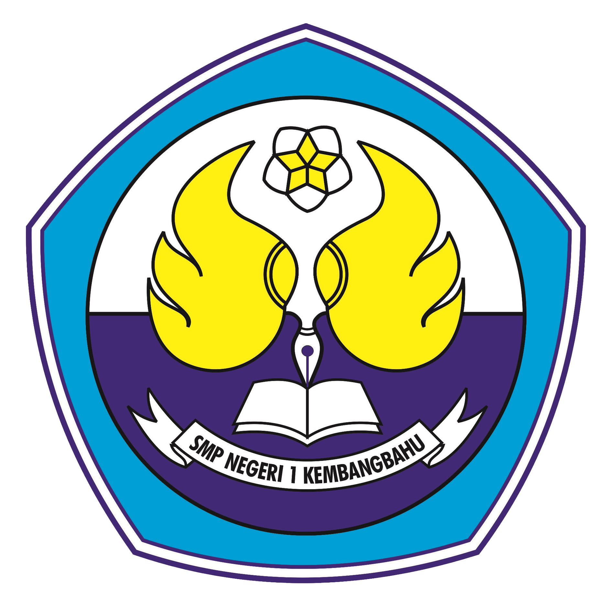

Fungsi · Desimal, Biner, Oktal · Pengorganisasian Data
Peserta didik mampu menerapkan strategi berpikir komputasional untuk memecahkan masalah komputasi yang mengandung struktur data, fungsi, serta representasi data dalam sistem bilangan.
Menjelaskan pengertian fungsi serta membedakan bagian masukan, proses, dan keluarannya.
Menelusuri alur pemrosesan sebuah fungsi dan memperkirakan nilai yang dikembalikan.
Membedakan sistem bilangan desimal, biner, dan oktal beserta basis dan digit penyusunnya.
Mengonversi bilangan desimal ke biner dan oktal, serta sebaliknya, dengan langkah yang runtut.
Mengidentifikasi himpunan digit yang sah pada setiap basis bilangan.
Menjelaskan konsep struktur data array, stack, dan queue beserta contoh penggunaannya.
Memilih struktur data yang sesuai untuk menyelesaikan sebuah persoalan sederhana.
Menyelesaikan soal komputasi dengan memecah masalah menjadi langkah dan fungsi kecil.
Fungsi adalah blok perintah bernama yang menerima masukan, mengolahnya, lalu mengembalikan keluaran. Sekali ditulis, ia bisa dipanggil berulang kali.
Setiap program berjalan berurutan: data masuk, diproses sesuai aturan, lalu hasilnya ditampilkan. Menelusuri alur membantu menemukan letak kesalahan.
Sistem sehari-hari dengan himpunan digit 0–9. Nilai tiap digit ditentukan tempatnya: satuan, puluhan, ratusan, dan seterusnya.
Hanya memakai digit 0 dan 1, sesuai kondisi mati–hidup pada rangkaian komputer. Nilai tempatnya kelipatan dua: 1, 2, 4, 8, 16, …
Memakai digit 0–7. Konversinya cepat: kelompokkan bilangan biner tiga digit dari kanan, lalu ubah tiap kelompok menjadi satu digit oktal.
Cara menata data agar mudah dicari dan diolah: array menyimpan berurutan dengan indeks, stack mengeluarkan data teratas, queue melayani yang paling depan.
Klik satu istilah di kiri, lalu pasangan penjelasannya di kanan.
Kerjakan ketiga babak untuk melihat hasil akhirmu.
Guru Mata Pelajaran Informatika
SMP Negeri 1 Kembangbahu — Fase D, Kelas VIII
“Komputer hanya mengenal 0 dan 1. Dari dua angka sederhana itu lahir seluruh dunia digital — bukti bahwa hal besar selalu dimulai dari dasar yang dipahami dengan baik.”